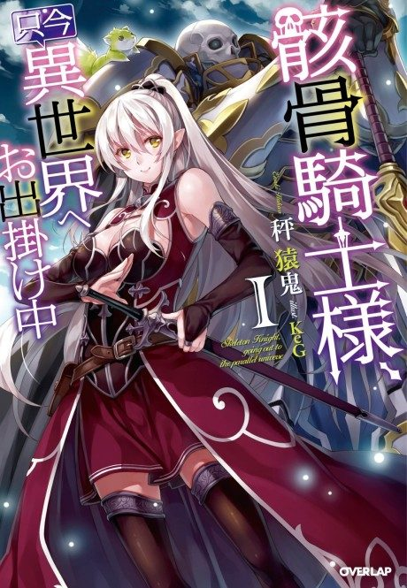
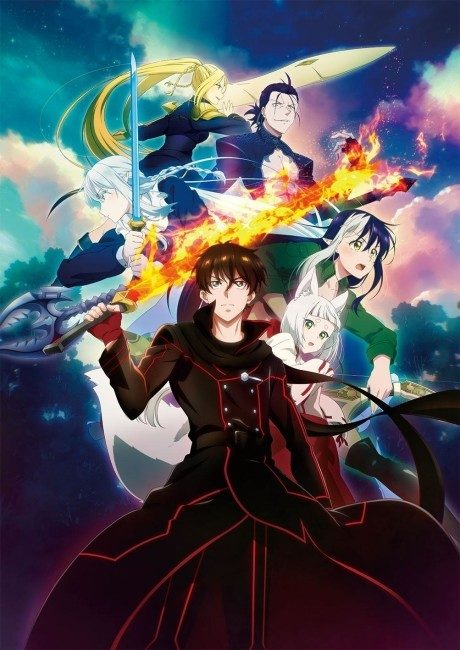

Skeleton Knight in Another World
骸骨騎士様、只今異世界へお出掛け中
We haven't found where the anime ends in the light novel yet.
7.0AniList score
—Animeter, no votes yet
24episodes, 2 seasons
Anime finished. Where does the story go next?
StatusNo source yet
We looked for where the anime ends in the light novel but found no source we trust yet. The light novel is still running.
More like Skeleton Knight in Another World

Unclear6.4 Manga Vol. 117.7
Manga Vol. 117.7
 Manga Vol. 57.3
Manga Vol. 57.3
 Manga Vol. 58.1
Manga Vol. 58.1
 Manga Vol. 56.6
Manga Vol. 56.6
 Manga Vol. 47.7
Manga Vol. 47.7